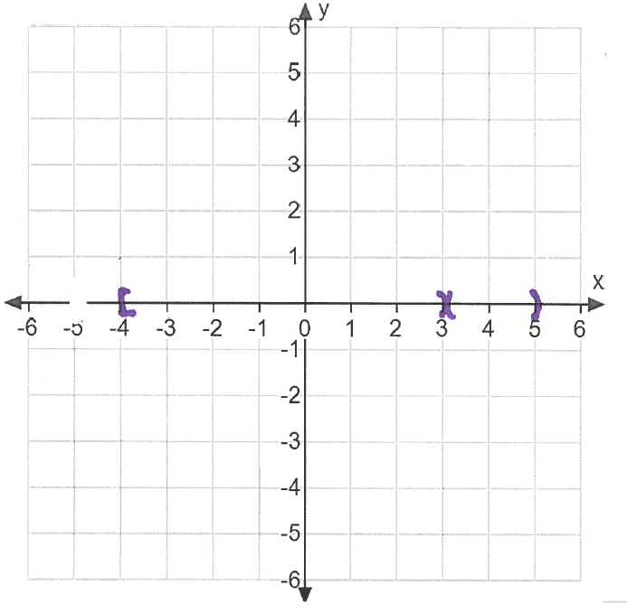
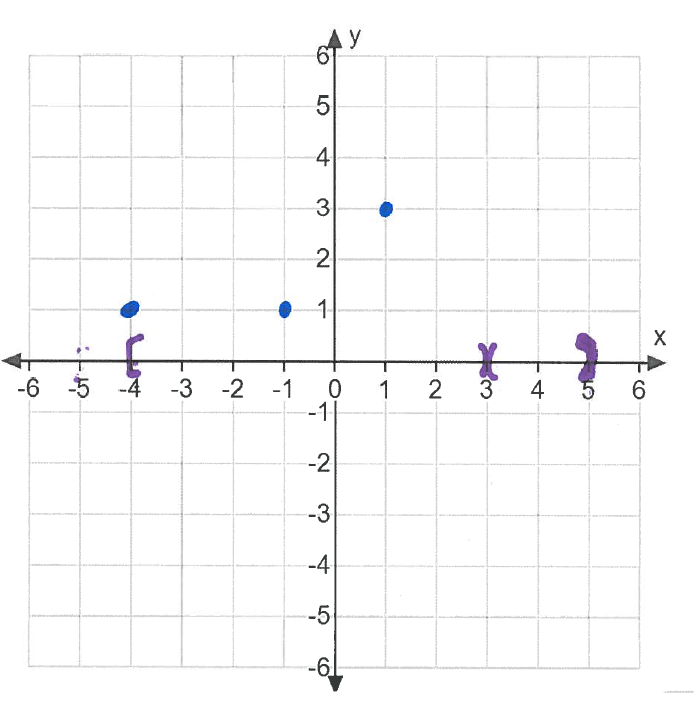

\begin{align*} \text {Domain:}\ [-4,3)&\cup (3,5)& f(1) &= 3 & f(-1) &= 1& f(-4)=1\\ \lim _{x \to -1^-} f(x) &= -2 & \lim _{x \to -1^+} f(x) &= 1 & \lim _{x \to 1} f(x) &= 2& \lim _{x \to 3^+} f(x) &=-1\\ \lim _{x \to 3^-} f(x)&=1& & & \lim _{x \to -4^+} f(x) &= 1 & \lim _{x \to 5^-} f(x) &= 1 & \end{align*}
One way to go about sketching the graph is as follows. First, on the x-axis, indicate
the domain (seen here in purple)

Next plot the given points (seen here in blue)

Then indicate the limits using open circles and tails to indicate if the limit is the value as the function approaches from the left or right or both(seen here in green)
alt=graph with open circles indicating the limit values, with tails indicating if the
limit is from the left or right.
Finally connect the graph.
alt=graph connecting the lines from previous, to give function.